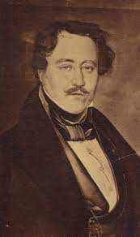
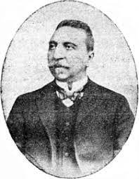
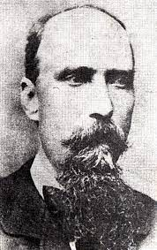

Junimea a fost un curent cultural și literar, dar și o asociație culturală înființată la Iași în anul 1863 de către Iacob Negruzzi, Petre Carp, Vasile Pogor, Theodor Rosetti și Titu Maiorescu.
În comparație cu Academia Română, intemeiată cam în aceeași vreme în București, ea nu a luat naștere după un act formal.
Junimea nu a fost neapărat o societate, ci o comunitate de interese culturale și socio-politice.
De asemenea, numele “Junimea” reprezenta și un cenaclu literar, o tipografie și un sistem de librării.
Ea se bazează pe vechea deviză franceza: “Intră cine vrea, rămâne cine poate”. Asociația dorește să-și dea o oarecare bază materială și o anumită ordine sistematică a lucrărilor, câștigă noi membri, se îngrijește de formarea noilor generații și poartă polemici colective. Totuși, dorința fundamentală a membrilor Junimii este înțelegerea comună a societății, a culturii și a literaturii. Tudor Vianu pune în evidență cinci serii de trăsături distincte ale junimismului: spiritul filosofic, spiritul oratoric, ironia, spiritul critic și gustul pentru clasic și academic.
Fondatori
Titu Maiorescu

15 februarie 1840 - 18 iunie 1917
Academician, avocat, critic literar, eseist, filosof, pedagog, politician și scriitor român, mason, cel de-al 23-lea prim-ministru al României, ministru de interne si membru fondator al Academiei Române.
Petre P. Carp
29 iunie 1837 - 19 iunie 1919
Politician român, membru marcant al Partidului Conservator si cel de-al 21-lea prim-ministru al României.
Vasile Pogor

20 august 1833 - 20 martie 1906
Om politic, publicist și poet român, care a îndeplinit în mai multe rânduri funcția de primar al municipiului Iași.
Iacob Negruzzi

31 decembrie 1842 - 6 ianuarie 1932
Scriitor, dramaturg, critic literar, jurist, profesor, politician, președinte al Academiei Române.
Theodor Rosetti

4 mai 1387 - 17 iluie 1923
Publicist și om politic român, cel de-al 16-lea prim-ministru al României în perioada,
membru de onoare al Academiei Române, ministru de finanțe și președinte al Senatului Român,
în guvernul Titu Maiorescu.
Etapele junimii:
1. 1863-1874
Perioada în care Junimea creează cele mai multe adversități (dificultăți), dar și în care, prin aderarea lui Vasile Alecsandri și descoperirea lui Mihai Eminescu, Junimea începe să capete prestigiu.
De ce se încheie în 1874? Titu Maiorescu devine ministru al Instrucțiunii publice și se mută la București.
2. 1874-1885
Etapa în care Bucureștiul este legat de Junime, ședințele asociației fiind ținute în ambele locuri. Tot în acest timp se stabilizează și direcția Junimii și a revistei "Convorbiri literare" , în care sunt publicate opere scrise de: Mihai Eminescu, Ion Creangă, Ion Luca Caragiale și Ioan Slavici; dar și alte personalități din artă, știință și cultură.
Este perioada de glorie absolută a revistei.
3. 1885-1900
Perioadă mai lungă și lipsită de omogenitate. Revista își schimbă în mare măsură profilul, predominând cercetările istorice și filozofice.
În anul 1885 Iacob Negruzzi se mută la București, luând cu sine revista a cărei conducere o păstrează singur până în 1893, pentru ca în 1895 să fie format un comitet care să își asume întreaga conducere a revistei.
În această perioadă are loc lupta “Junimii” cu socialiștii, acțiune a lui Titu Maiorescu. Revista "Convorbiri literare" se deschid și lui George Coșbuc.
Această perioadă oferă grupării și revistei un caracter predominant universitar.
Este epoca în care se stabilește, pentru trei sau patru decenii de aici înainte, configurația Universității, mai ales a celei bucureștene. Din Junime se desprind figurile cele mai proeminente ale științei și oratoriei universitare.
4. 1900-1907
În 1900 vechiul comitet se completează cu nume noi, provenite din domeniul științelor naturale. Mai puține nume din sferele literare și mai multe din cele savante și universitare. În 1903, Ioan Bogdan devine directorul revistei până în 1907, când revista trece sub conducerea lui Simion Mehedinți.
Dacă până în 1900 revista își păstrase în primul rând caracter literar și filozofic, tradițional, o dată cu intrarea lui Ioan Bogdan în comitetul de redacție și apoi cu trecerea lui la conducerea revistei, aceasta devine o arhivă de cercetări istorice, în paginile căreia se disting studii aparținând lui Nicolae Iorga și alții.
Dacă vechile lupte ale "Convorbirilor literare" fuseseră purtate pe teme de cultură generală, acum este vremea polemicilor erudite, precum cele ale lui Nicolae Iorga împotriva lui A. D. Xenopol și Tocilescu. Revista nu mai este la fel de populară ca în anul 1890.
5. 1907-1944
Această etapă coincide cu lunga conducere a lui Simion Mehedinți, în timpul căreia arhiva de cercetări istorice se completează cu una de filozofie.
Personalitatea literară cea mai importantă a epocii este Panait Cerna, a cărui colaborare începuse însă sub conducerea anterioară.
În latura îndrumării critice, nimic nu poate fi pus alături de marea epocă ieșeană și nici de dezvoltarea ei ulterioară. Apariția lui Eugen Lovinescu este de scurtă durată, rostul criticului urmând să se precizeze mai târziu. Convorbirile literare au avut totuși controverse și în această perioadă cu revistele "Viața nouă" și "Viața românească".
Lipsite însă de sprijinul unor noi și puternice talente literare, Convorbirile literare încep să piardă din vechiul prestigiu până când, în 1921, Simion Mehedinți predă conducerea lui Alexandru Tzigara-Samurcaș și arhitectului Alexandru M. Zagoritz. Nici noua direcție nu reușește să impună revista în fața cititorilor.
O viziune asupra întregii “Junimi” nu va mai fi posibilă decât după ce va fi cuprinsă întreaga arborescență a mișcării, dezvoltată prin silințele celei de-a doua generații de scriitori și gânditori junimiști.
CRITICA FORMELOR FARA FOND
Titu Maiorescu observă că, începând cu 1821, dezvoltarea ţării s-a realizat prin preluarea de la alte civilizaţii europene a unor „forme” (adică nişte instituţii sociale sau culturale) care nu se potriveau „fondului”, adică spiritului tradițional și modului nostru de viață.
Observaţia criticului literar a devenit celebră sub numele „forme fără fond”: „În aparenţă... avem politică şi ştiinţă, avem jurnale şi academii, avem şcoli şi literatură, avem muzee, conservatorii, avem chiar o constituţie.
Dar în realitate toate acestea sunt producţiuni moarte, pretenţii fără fundament, stafii fără trup, iluzii fără adevăr...” Maiorescu porneşte de la premisa că în toate straturile culturii române se poate identifica viciul „neadevărului", al imitaţiei, al superficialităţii, în urma unei dorințe de occidentalizăre. El oferă ca exemple, atât din domeniul literar sau lingvistic (Lexiconul de la Buda), cât şi din istorie (lucrarea lui Petru Maior despre latinitatea poporului şi a limbii române).
Afirmă lipsa de conţinut a unor instituţii din epocă, precum şcolile şi universităţile lipsite de dascăli competenţi sau teatrele care funcţionează mecanic în absenţa unui repertoriu naţional original şi a unor actori de prestanţă.
Maiorescu numeşte aceste realităţi „forme fără fond” şi refuză preluarea unor modele occidentale în absenţa unui fond autohton solid. Convins că „forma fără fond este de-a dreptul stricăcioasă" deoarece nimiceşte cultura, Maiorescu respinge împrumuturile exagerate, neselective şi imitaţiile fără valoare, recomandând îndepărtarea mediocrităţilor şi promovarea formelor ce definesc identitatea noastră culturală.
O CERCETARE CRITICA ASUPRA POEZIEI ROMANE DE LA 1867
Acest articol a fost scris pentru o antologie a poeziei românești de atunci, ca obiectiv al activităților societății „Junimea”. Articolul este împărțit în două părți: „Condițiunea materială a poeziei” și „Condițiunea ideală a poeziei”.
Acest articol a fost scris pentru o antologie a poeziei românești de atunci, ca obiectiv al activităților societății „Junimea”.
Articolul este împărțit în două părți: „Condițiunea materială a poeziei” și „Condițiunea ideală a poeziei”.
În acest eseu, Titu Maiorescu definește frumusețea drept "manifestarea ideii în materie sensibilă".
Maiorescu are ca obiectiv să arate diferența dintre o poezie bună și una proastă, astfel propunându-și să alcătuiască o antologie cu cele mai bune poezii scrise până în acel moment.
Pentru aceasta, el trebuie să folosească anumite principii estetice, deoarece poeziile respective nu trebuie alese la întâmplare sau după bunul gust. Acestea, fiind cele mai bune poezii, urmau să servească drept exemple de poezie contemporană.
Potrivit lui Titu Maiorescu, pentru ca o poezie să fie demnă de titlul său, trebuie îndeplinite două condiţii: condiția materială şi condiția ideală.
CONDITIA MATERIALA A POEZIEI
„Condițiunea materială a poeziei” este prima parte a studiului, care definește structura materială a versurilor, a poeziei în general.
Spre deosebire de pictură, sculptură sau muzică, poezia nu are în cuvânt condiția sa materială, trebuind astfel creată prin imagini artistice.
Maiorescu nu are noțiune de simbol, dar îl numește intuitiv „alegerea cuvântului celui mai puțin abstract” și dă exemplul lui Andrei Mureșanu: „N-ajunge iataganul barbarei semilune”, din Shakespeare: „ Orce te-ar depărta de la cercul de aur".
Epitetele sunt preluate de la Homer: „Minerva cu ochiul albastru”, Vasile Alecsandri: „Galben ca făclia de galbenă ceară”. Potrivit acestuia, conținutul trebuie să fie dinamic, tensionat și să aibă un final bine structurat, iar conținutul lucrării să se bazeze pe cuvinte simple, exprimând imagini cunoscute, dar și cu un stil elaborat. Pentru a atinge condiția materială, poetul folosește o serie de procedee: simboluri, epitete, personificări și metafore. Comparațiile și metaforele sunt alte trăsături stilistice care pot stârni imaginația cititorului. Exemple de metafore și comparații sunt de la Goethe, Heine, Dimitrie Bolintineanu: „Mihai mândru vine iară / Falnic ca un stâlp de pară”. De la Vasile Alecsandri, însă, Maiorescu nu se limitează la afirmații seducătoare, ci stabilește reguli concrete. Condiţiunea materială este astfel un obiect artistic realizat prin alegerea unor cuvinte capabile de concretizare.
În viziunea lui, cuvântul întruchipează imaginea și o face să prindă contur în imaginația cititorului, astfel încât cuvântul este comun, simplu și perfect adaptat limbajului, ceea ce face ca neologismele nepotrivite ca material poetic.
CONDITIA IDEALA A POEZIEI
În a doua parte, criticul se ocupă de fondul poeziei.
Fondul nu trebuie înțeles ca o idee propriu-zisă, ci ca un sentiment sau o pasiune: "Ideea sau obiectul exprimat în poezie este totdeauna un simțământ sau o pasiune și niciodată o cugetare intelectuală.”
Titu Maiorescu susține că o poezie trebuie să exprime neapărat sentimente și trăiri sufletești, nu raționamente și idei politice, ori științifice. Pentru a transmite mesajul său afectiv, poetul utilizează mai multe procedee: „O mai mare repejune a mișcării ideilor”, „O exagerare sau cel puțin o mărire și o nouă privire a obiectelor sub impresiunea simțământului și a pasiunii”, „O dezvoltare grabnică și crescândă spre o culminare finală sau spre o catestrofă”.
Maiorescu dă exemple din Heine, Alecsandri, Lessing, Goethe, poezia pupulară, Horațiu, spunând că rolul criticii sale este „să arate modelele bune câte au mai rămas și să le distingă de cele rele.”
Concluzii
Astăzi se poate afirma că, teoria „formelor fără fond“, elaborată de Maiorescu, atât de controversată, în perioada postbelică, a răspuns, în timp, necesităților obiective de respingere a mediocrității și a altor forme de impostură manifestate în artă.
Junimea și Convorbiri literare au avut un rol decisiv în cultura și literatura română.
După cum este unanim recunoscut și după cum au subliniat cei mai reprezentativi monografi și exegeți ai activității Junimii, trebuie să recunoaștem că, spiritul junimist a făcut să triumfe ideea conform căreia, în evaluarea operei de artă, este imperios necesar să primeze valoarea estetică, indiferent de ideea tematică.